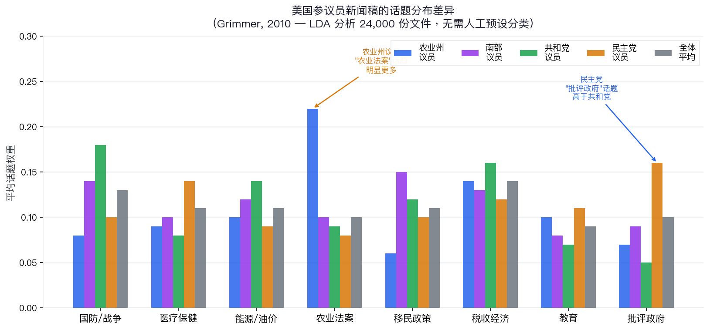
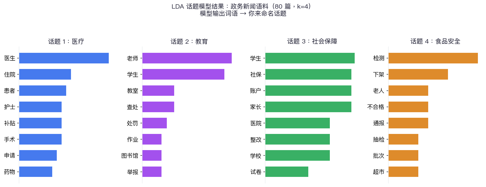
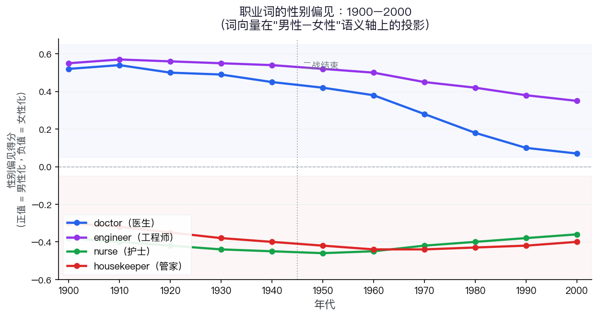
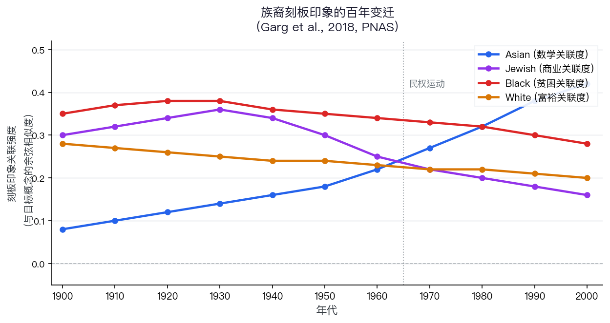
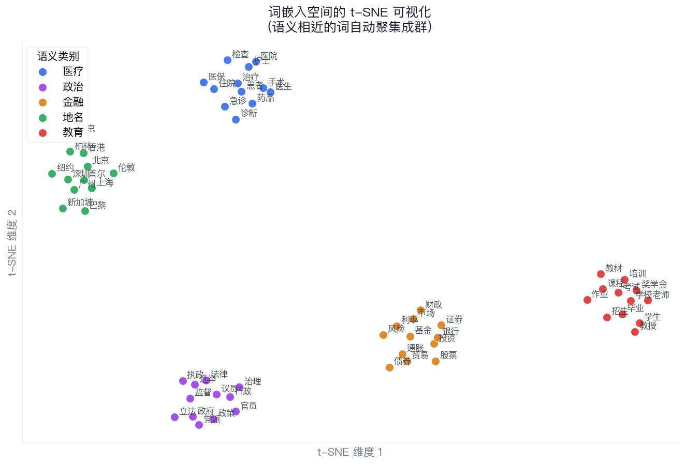

让数据自己说话
第五课
郑思尧
上海交通大学 国际与公共事务学院
"All models are wrong,
but some are useful."
— George Box，统计学家，1976
今天的方法不会告诉你"正确答案"
它只会从数据里找出有用的结构——
你负责判断这个结构对你的业务有没有意义
今天的核心问题：没有标签，机器能发现什么？
贯穿全课的问题：无监督 = 发现隐藏结构
共同困境：文本太多，人工无法逐条阅读，但又没有预设的分类标签
想象你在看 100 篇微博：
话题 A：医疗
高频词：挂号、医生、检查、费用、等待
话题 B：教育
高频词：作业、考试、补课、老师、成绩
话题 C：交通
高频词：堵车、地铁、限行、停车、违章
LDA 的工作
1. 你告诉它：找 k 个话题
2. 它自动发现：每个话题由哪些词构成
3. 以及：每篇文章讲了多少比例的每个话题
模型不知道"医疗"这个名字
你读到词就知道了
每篇文章都像一个人，口袋里揣着几枚"话题骰子"：
每一个词，都是"掷骰子"决定来自哪个话题
狄利克雷分布的直觉
就是描述"骰子的形状"——
一篇文章里各话题比例的先验分布
参数 α 小 → 话题集中（纯粹型文章）
参数 α 大 → 话题分散（混合型文章）
模型通过反复调整每个词的话题归属，
逐渐找到最符合所有文章的那套话题分配
💬 想想看：如果你的工作文本有 6 个话题，第 7 个话题会是什么？

农业州议员在"农业法案"话题权重明显更高；民主党在"批评政府"话题高于共和党——模型自己发现的，无需人工标注
Grimmer, J. (2010). A Bayesian hierarchical topic model for political texts. Political Analysis, 18(1), 1–35.
from sklearn.feature_extraction.text import CountVectorizer
from sklearn.decomposition import LatentDirichletAllocation
# 1. 构建词频矩阵
vectorizer = CountVectorizer(max_df=0.9, min_df=2)
X = vectorizer.fit_transform(texts) # texts = 分词后的字符串列表
vocab = vectorizer.get_feature_names_out()
# 2. 训练 LDA，指定话题数 k — ⚠ k 由你来定，模型无法自行决定最佳值
lda = LatentDirichletAllocation(n_components=4, random_state=42)
lda.fit(X)
# 3. 查看每个话题的前 10 个词（不需要手写此代码，理解每步做什么即可）
for i, comp in enumerate(lda.components_):
top_words = vocab[comp.argsort()[::-1][:10]]
print(f"话题 {i}: {' | '.join(top_words)}")
话题1（医生/住院/患者/手术）→ 你命名为"医疗"｜话题4（检测/下架/抽检/超市）→ 你命名为"食品安全"
模型自动发现了这 4 个结构，命名工作由你来完成
使用 sklearn.decomposition.LatentDirichletAllocation，n_components=4，random_state=42
① 话题数 k 靠人设定
设 k=6 和 k=12，结果完全不同。没有"正确答案"，只有"对你有用"的答案
② 忽略词序
"感谢医生，不满意收费"与"不满意医生，感谢收费"被视为完全一样的文档——顺序和语气消失了
③ 不理解词义
"苹果"在科技与饮食语境被视为同一词——这是下节课词嵌入要解决的问题
解读必须靠领域知识
模型输出一堆词
你才知道这个话题叫"医疗投诉"还是"卫生监管"
没有领域知识，模型是失效的
All models are wrong —
你的判断是让它变得 useful 的关键
如果你要追踪话题随时间的变化，
还需要对齐每次运行的话题编号——这是额外工作
LDA：从一堆文本里
自动找出话题结构
不需要标签，不需要预设分类
输入文本 → 输出"哪些词属于哪些话题"
你来解读，你来命名
PART 2 → 如果词本身也能变成数字，会发生什么？
词嵌入的核心思想：把每个词变成一个向量（一排数字），让语义相近的词在空间中靠得更近
把每个词想成一张"地图上的坐标"：
医生 → [0.82, 0.91, 0.23, ...]
护士 → [0.79, 0.88, 0.25, ...]
律师 → [0.45, 0.92, 0.67, ...]
苹果 → [0.12, 0.08, 0.94, ...]
橘子 → [0.11, 0.06, 0.95, ...]
维度通常是 100~300 维
每一维捕捉语义的某个方面
夹角越小 = 语义越相近
医生 ↔ 护士 → 方向相近，相似度高
医生 ↔ 苹果 → 方向差异大，相似度低
苹果 ↔ 橘子 → 方向相近，相似度高
相似的用法 → 相近的向量方向
（技术上用余弦相似度，不是直线距离）
Word2Vec 的核心任务（CBOW 架构）
给定一个词的上下文（周围词），预测这个词本身——反复做这个任务，词向量就学好了
"患者 [?] 反映 床位 紧张"
→ 根据前后词，预测 [?] 是"家属"？"代表"？
→ 反复练习数十亿次，向量逐渐收敛
上百亿词的文本 + 不断迭代
→ 模型"读"出了语言的规律
→ 训练完全无监督，不需要任何标签
向量之间可以做算术——语义关系变成了数字关系
最后一个例子揭示了一个社会偏见——模型从大量文本中学习，也学进了人类的刻板印象。这正是 Garg et al. (2018) 的核心研究问题。
💬 最后那个例子让你感到意外吗？为什么"医生 − 男 + 女 ≈ 护士"？
核心方法
1. 构建"性别轴"：male 词 vs female 词的向量差
2. 计算职业词（如 doctor, nurse, engineer）在这个轴上的投影
3. 看投影如何在 1900–2000 年间变化
发现
1960 年代前：doctor 强烈偏向"男性"
二战后：职业词的性别偏见逐渐减弱
亚裔相关词：与"数学"关联在近代才出现
刻板印象在词向量里留下了历史痕迹
Garg, N., Schiebinger, L., Jurafsky, D., & Zou, J. (2018). Word embeddings quantify 100 years of gender and ethnic stereotypes. PNAS, 115(16), E3635–E3644.

1960 年代以前，几乎所有"高技能职业"词都偏向男性；二战后 doctor 的男性偏见显著收窄，但 housekeeper 的女性化关联在部分时期仍维持或加强
⚠ 示意图：数据依据 Garg et al. (2018) 图1公布数值重建，非原图
Garg et al. (2018), PNAS
1900 年代最近邻
physician (0.96)
surgeon (0.94)
gentleman (0.81)
his_office (0.79)
he (0.76)
1990 年代最近邻
physician (0.97)
surgeon (0.95)
nurse (0.83)
she (0.78)
patient (0.77)
社会变迁在语言里留下了痕迹 — 词嵌入把这些痕迹变成了可量化的数字
⚠ 示意输出：最近邻词和相似度数值为教学示意，参考 Garg et al. (2018) Table 1 的定性规律

Asian 与"数学"的关联在 1960 年代以后才显著上升——刻板印象并非一直存在，它是历史建构的产物
⚠ 示意图：依据 Garg et al. (2018) 结论重建，趋势方向忠实于原文，具体数值为近似
Garg et al. (2018), PNAS
💬 你的行业里，有没有类似的刻板印象藏在数据里？
# 安装：pip install gensim
import gensim.downloader as api
# 课堂演示推荐轻量模型（50 维，解压约 66 MB）
model = api.load("glove-wiki-gigaword-50")
# 加载大模型时用（300 维，解压约 3.6 GB，课堂网速需确认）
# model = api.load("word2vec-google-news-300")
# ① 查询最相似的词（先检查词是否存在）
if "doctor" in model:
model.most_similar("doctor", topn=5)
# → [('physician', 0.83), ('nurse', 0.79), ...]
# ② 词向量算术
model.most_similar(positive=["king", "woman"], negative=["man"], topn=1)
# → [('queen', 0.71)]
# ③ 语义相似度
model.similarity("doctor", "nurse") # → 0.79
model.similarity("doctor", "apple") # → 0.09此处加载的是 GloVe 向量（基于全局词共现统计），与 Word2Vec（基于局部预测）属同类静态词嵌入，most_similar / similarity 用法相同。
50 = 向量维度；glove-wiki-gigaword-50 约 66MB，课堂演示推荐；不需要手写，理解每步做什么即可
把高维词向量（如 50 维或 300 维）压缩到 2 维，让你能"看见"语义空间：
医疗类词聚在一起
政治类词聚在一起
数字类词聚在一起
相似的词自动形成"星座"
t-SNE 只是用来"看"的
真正的语义是在高维空间里

t-SNE 把 300 维词向量降到 2 维，语义相近的词聚在一起
⚠ 示意图：基于合成向量生成，展示 t-SNE 聚类原理，非预训练模型实际输出
① 一词一义：无法处理多义词
"苹果"在 Word2Vec 里只有一个向量，但在"苹果公司发布会"和"苹果树上结满苹果"里含义完全不同
② 刻板印象被放大
如 Garg 所示：语料中有什么偏见，模型就学进什么。用词嵌入筛选简历可能系统性歧视某类群体
③ 专业术语效果差
通用模型不认识"肠系膜""窦性心律"等专业词——医疗/法律等场景需要领域专用预训练模型
领域知识仍不可替代：你需要判断哪些"相似"在你的场景里有意义
词嵌入：
把语言变成可计算的几何空间
相似的词 → 空间中相近的点
语义关系 → 向量运算
无监督训练，捕捉人类语言的深层规律
PART 3 → 这两个工具能帮你解决什么业务问题？
很多真实项目会两个一起用：词嵌入提升文本表示质量，LDA 对话题做结构化发现
人工解读是最关键的一步 — 模型找出结构，你来判断"这个话题叫什么"、"这个结果有没有意义"
这套流程可以无标签冷启动——但落地高风险业务（医疗、金融）仍需人工抽检和合规评估
在你的工作场景里：
1. 你手上有哪类文本数据？（问卷 / 报告 / 热线 / 评价 / 其他）
2. 你更想用 LDA 还是词嵌入？为什么？
3. "All models are wrong" — 你觉得模型的哪个输出你最不放心，需要人工把关？
无监督 = 发现隐藏结构
LDA 发现话题结构
词嵌入建立语义空间
两者都不需要标注，都依赖你的领域知识解读
All models are wrong, but some are useful.
下节课：文本处理基础 — 把原始文字变成机器读懂的数字